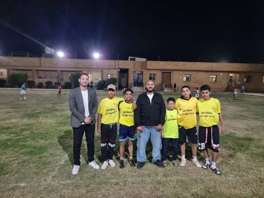
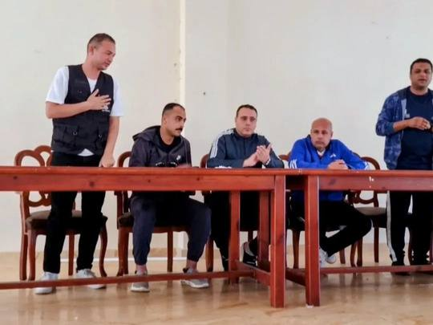
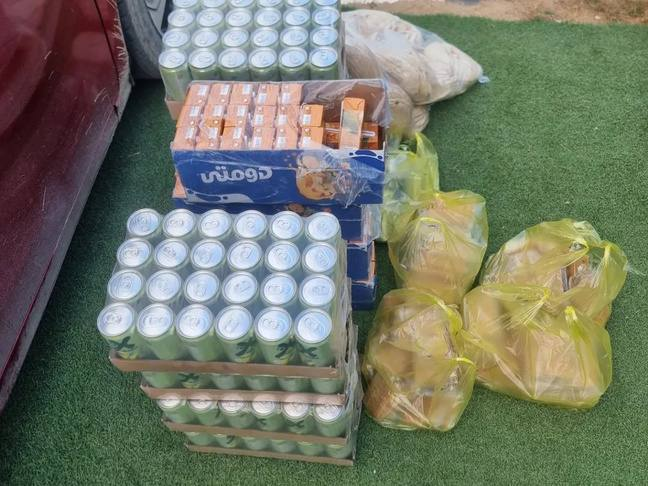
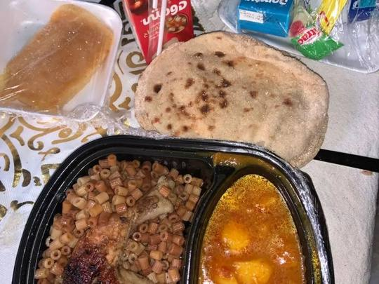
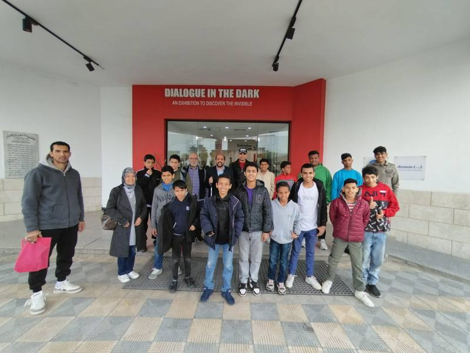
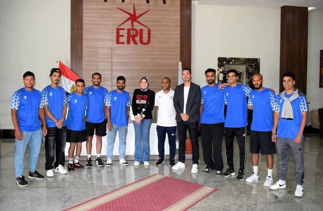
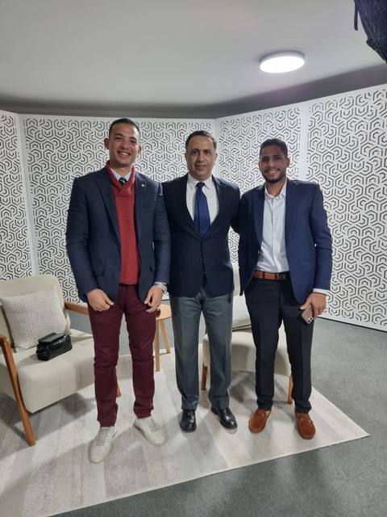
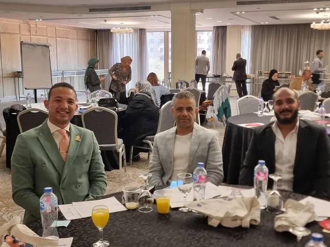
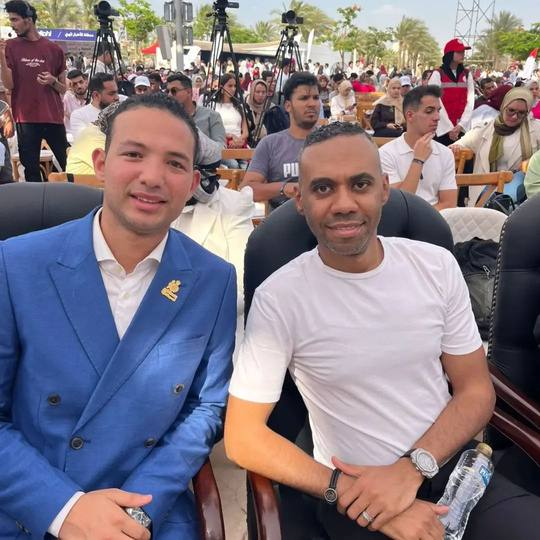

From the pitch to the decision-making room: what we have done with care-home youth and their families, in photos.
We organized the Jusoor Ramadan Tournament 2026 with 282 players from 23 care homes. We helped organize the National Orphans Project camp in Ras El-Bar, at the invitation of the Ministry of Youth and Sports, with 400 children from 27 governorates. Our team won third place at the Arab League Cup.






We distributed 150 hot meals a day for 29 days in Ramadan, plus Ramadan food bags, for care leavers and their families in Maadi, Badr, 15 May, El Salam and Obour. We provided 160 pieces of furniture and ran a medical caravan with the Ibrahim Ahmed Badran Foundation that served 120 beneficiaries.





We tracked more than 70 television, digital and print features. We ran awareness campaigns and sports days in 3 schools and 7 universities, joined the Hona El-Tadamon podcast, and took part in a documentary episode of the series Awlad El-Shams in Ramadan drama 2025. With Dialogue in the Dark we ran awareness trips for 180 beneficiaries, and we held an awareness day and a workshop on care-home visiting etiquette at Midor Petroleum.








We accepted an official invitation inside the House of Representatives to represent young orphans, and met leaders of the Ministries of Social Solidarity and of Youth and Sports to carry the youth experience to decision makers. We also joined a Samusiel Foundation seminar with the European Union on surrogate mothers at risk of street life.




We provided more than 150 job opportunities for care-home youth. With the French University in Egypt we ran Soft Skills and ICDL courses for care-home youth, and 20 of them passed and received graduation certificates. We also received 35 official invitations to the Start Summit at the Egyptian Museum, for training and job opportunities.




Basmat Nour volunteers took part in the volunteer day organized by Midor Petroleum at Dar Al-Sandas for orphans.

For partnership, sponsorship or volunteering, write to basmatnour.org@gmail.com